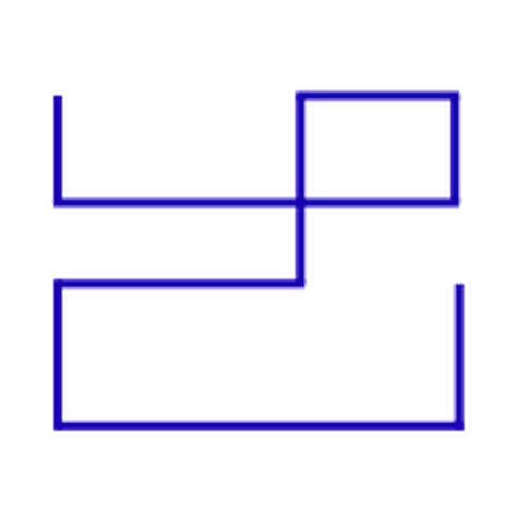

Quantitative Research
Statistical investigation, market analysis, and systematic hypothesis testing grounded in data and evidence.
Enquire ↗
BASALT RESEARCH & TECHNOLOGIESWe build research-driven tools, systematic strategies, and quantitative infrastructure to help make sense of increasingly complex financial markets.
Markets are complex.
Our process is deliberate.
Basalt Research & Technologies is a quantitative research, investment, and financial technology firm dedicated to advancing data-driven investment intelligence.
We combine rigorous quantitative research, statistical modeling, and technology-driven execution to investigate market behaviour, identify opportunities, and build disciplined approaches to risk.
Founded to develop advanced trading and risk-management solutions, Basalt has grown into a broader quantitative investment organization working across research, strategy development, portfolio tools, and algorithmic trading infrastructure.
From a research hypothesis to a tested system, we focus on the full lifecycle of quantitative decision-making.
Statistical investigation, market analysis, and systematic hypothesis testing grounded in data and evidence.
Enquire ↗Rule-based trading frameworks designed to turn explicit hypotheses into testable, repeatable processes.
Enquire ↗Analytical tools for evaluating exposure, understanding drawdowns, and bringing structure to portfolio decisions.
Enquire ↗Research and execution infrastructure that helps move ideas from analysis toward robust implementation.
Enquire ↗We believe good decisions begin with better questions.
Our work is built around a repeatable cycle: formulate a hypothesis, test it against data, understand its limitations, and evaluate how it behaves under changing market conditions.
Evidence over intuitionResearch that can be tested, challenged, and refined.
Risk is part of the modelRisk analysis belongs at the beginning, not the end.
Build for iterationSystems designed to improve as questions evolve.
Basalt brings research and engineering together to approach financial problems with rigor, humility, and a long-term perspective.
CO-FOUNDER & CEO
Leads the firm's direction, quantitative research agenda, and investment initiatives.
CO-FOUNDER & CTO
Leads technology and engineering, translating research ideas into practical systems.
LET'S START A CONVERSATION